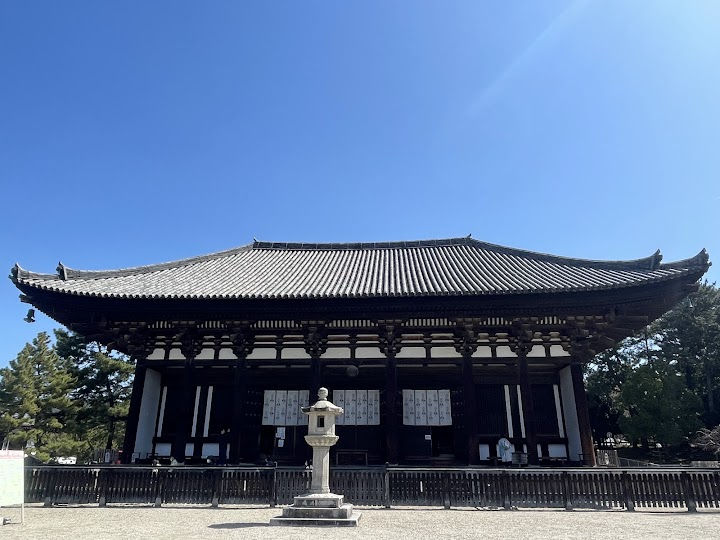
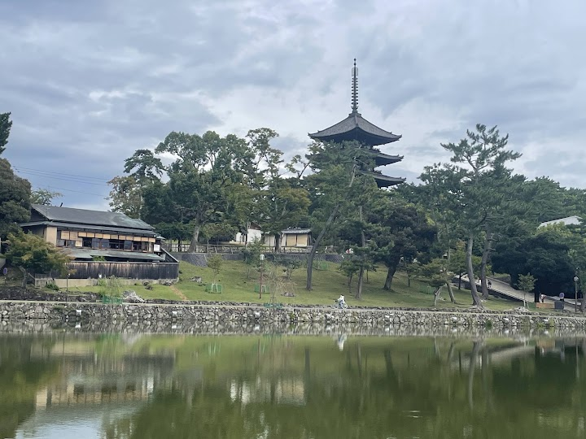
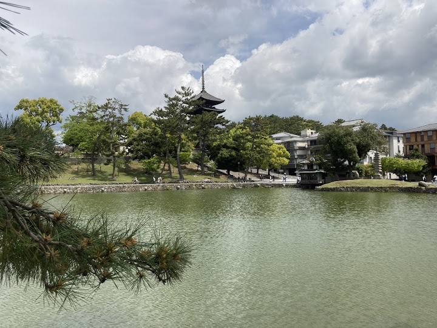
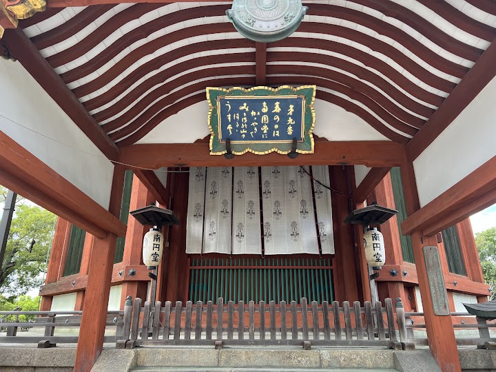
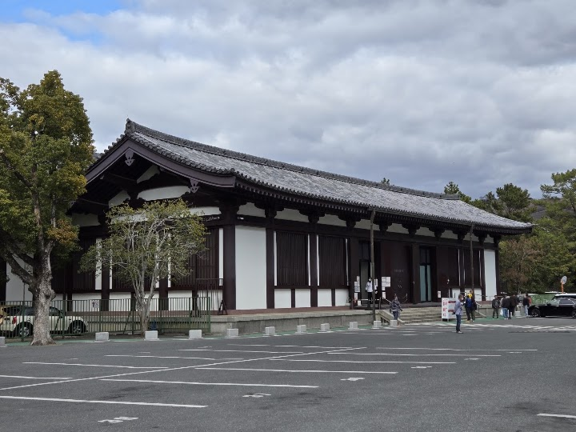

Kōfuku-ji
Kōfuku-ji is a complex of Buddhist temple halls and pagodas, long the family temple of the powerful Fujiwara clan, with a five-storey pagoda that is a symbol of Nara and a museum of national treasures. It is a short walk from Nakatanidou and the town centre.
Open in Google Maps (street view, more photos and reviews there)






Visitor tips on finding it and getting there
Kōfuku‑ji Temple in Nara is a remarkable site that beautifully blends history, spirituality, and architectural elegance. Visiting this temple feels like stepping back into Japan’s rich past, as it was once one of the most powerful temples of the Fujiwara clan. The temple grounds are expansive and serene, offering a peaceful escape while still being right in the heart of Nara. The highlight for me was the iconic Five‑Story Pagoda, which stands tall as one of the largest in Japan. Its graceful silhouette against the sky is breathtaking, especially at sunset when the structure glows warmly. Walk
Kofuku-ji Temple is a wonderful Buddhist site in Nara, once part of the powerful Seven Great Temples. It features the iconic Five‑Story Pagoda, one of the tallest in Japan, and is just a short walk from the charming Nara Park. The temple grounds are quite spacious and are home to the friendly roaming deer, adding a special touch to your visit. Nara itself is a beautiful city that beautifully combines rich history, culture, and stunning wooden architecture, all beside the majestic giant Buddha.